The game's setting and assumptions
Let us consider a simplified supply chain of couscous, made of four layers representing respectively: a retailer, a warehouse, a distribution center (DC), and a factory where couscous is produced.
Orders flow in the following direction: retailer - warehouse - DC - factory, while shipments of couscous travel in the opposite direction.
Each layer (retailer, warehouse, DC, and factory) maintains its own inventory of couscous and uses it to fulfill orders from the layer downstream; that is, the retailer satisfies orders from customers, the warehouse responds to orders from the retailer, the DC deals with orders from the warehouse, and finally, the factory fullfills the DC's orders.
All layers have an order lead time (which may correspond to processing delays for instance) of two periods (rounds). Hence, an order made by a retailer of period 4 will reach the warehouse in period 6, etc. The factory has also a similar lead time of two periods for its production orders.
Due mainly to transportation delays between the layers, there is a lead time of two periods as well for moving couscous from one layer to the layer downstream.
The order fulfillment at all layers is pretty straightforward: if there is enough on-hand inventory to fulfill an order, the latter is met and the on-hand inventory is updated accordingly; otherwise, part or all of the order is backordered.
For the sake of simplicity, unit (per period, per unit) costs of maintaining on-hand inventory and backorders are fixed in the current version of the game to the following values:
- Inventory at retailer = 1 MAD (Moroccan Dirham).
- Inventory at warehouse = 0.75 MAD.
- Inventory at DC = 0.50 MAD.
- Inventory at factory = 0.25 MAD.
- Backorder at retailer = 5 MAD.
- Backorder at warehouse = 2 MAD.
- Backorder at DC = 1.50 MAD.
- Backorder at factory = 1 MAD.
Orders are unfortunately not free of charge, and each one of the four actors pays a fixed charge for each order made. These charges are as follows:
- One order made by retailer = 50 MAD.
- One order made by warehouse = 50 MAD.
- One order made by DC = 50 MAD.
- One production order made by factory = 20 MAD.
Customer orders at the level of the retailer are randomly and independently generated on every period using patterns chosen by the game's administrator (Admin). For the moment, three patterns have been implemented:
- Pattern 1: Uniform distribution between a minimum value and a maximum value.
- Pattern 2: Uniform distribution between a minimum value and a maximum value, with a persisting burst (or drop) in demand after n periods. The change is simulated by applying a multiplicative factor to the generated uniformly-distributed values for all periods >= n.
- Pattern 3: Uniform distribution between a minimum value and a maximum value, with a cyclical burst (or drop) in demand after n periods. The change is simulated by applying a multiplicative factor to the generated uniformly-distributed values every n periods.
The game starts with an initial inventory (100 units) at each layer, no backorders, and an initial pipeline of outstanding orders and shipments, that will be displayed once the game is initiated.
The objective of the players is to place appropriate orders and manage their inventory in a way that "optimizes" their individual costs (ordering, on-hand and backorder) or the entire supply chain's should they decide to play cooperatively.
An overview on how to play the game
Before playing the game, Admin needs to set up the game's parameters. If parameter setting is skipped by Admin, the following default pattern for customer order generation is used: uniformly distributed orders, with a minimum value of 20 and a maximum value of 80. Parameter setting is done through the following steps:
- Step 1: The role played in the game (here "Admin") is chosen using the radio button on the top of the game's canvas, and the password provided by the author (me) is entered in the corresponding cell. Admin then initializes the game by clicking on the "Initialize Game" button.
- Step 2: Following Step 1, the "Game Parameters" area becomes accessible to Admin, who needs to enter the chosen pattern for customer order generation, supply the needed parameters accordingly, and click on the "Update Params." button.
- Step 3: Following Step 2, the entered parameters are hidden (so that the players may not see them) and the game is ready to be played.
Note: In case classical music play is selected by Admin, the user will notice that each time a game is initiated, a randomly selected classical music mini-track (among 30 different pieces) will play. The instructor may quiz the participants on the piece played or at least the identity of the composer. Clicking on the "Track played?" button will uncover the identity of the piece and its composer.
After initialization, the game can be played in stepwise mode by the retailer, warehouse, DC, or factory. This is done by:
- Choosing the approriate role played in the game ("Retailer", "Warehouse", "DC", or "Factory") in the approriate cell and initializing the game by clicking on the "Initialize Game" button. No password will be requested in this case.
- Following the steps of a round one by one by clicking on the "Next Step" button. The player needs to pay attention to the messages in the "Game Log" section of the canvas, especially to the actions needed appearing in red. Some of these actions would need the player to enter an order, which is imperative and needs to be correctly formatted.
- After a number of rounds of play, the player may decide to stop and check the game's progress. This is done by generating summary tables and charts, thanks to the corresponding buttons in the "Summary" section of the canvas.
The administrator can also play the game as Admin, with more possibilities and full visibility of the system.
Indeed, Admin can play in stepwise manner in a similar way to the retailer, warehouse, DC, and factory, and see every single step of the whole cycle in a given round. In addition, Admin can conveniently play round-wise, that is, complete rounds in one shot. This is done by clicking on the "Next Round" button instead of "Next Step".
By playing this way, Admin needs to be cautious enough to have all orders entered beforehand, and change these default values if necessary as the game progresses. A warning is issued in case this element of common sense is forgotten.
After a number of rounds of play, Admin may choose to generate tables and charts. The latter cover all the players and give Admin a holistic view on individual and overall performances. Note that the user can copy/past a table to an Excel spreadsheet, which is convenient for storage of game sessions and further analysis.
A step-by-step guide to a typical game session
In the following, a step-by-step game session played by an instructor with a group of students is described. Screenshots are used to illustrate visually the play.
Initialization of the game session:
- Admin first decides whether to enable music when playing the game.
- Admin chooses the "Admin" role and enters the password in the corresponding cell. The game is then initialized by clicking on the "Initialize Game" button.
- The "Game Parameters" area becomes accessible to Admin, who needs to enter the chosen pattern for customer order generation, supply the needed parameters accordingly, and click on the "Update Params." button.
In the present session, we choose to play with Pattern 3, which consist of uniformly distributed customer demand, with a minimum demand of 40, a maximum demand of 50, a burst in demand (with a multiplicative factor of 2.5) every 4 rounds.
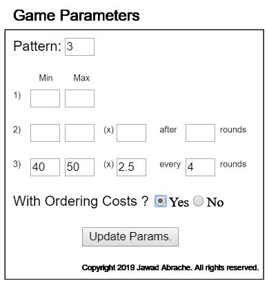
Playing as a retailer:
- Admin asks the retailer team to choose "Retailer" as role and click on the "Initialize Game" button. No password is needed here.

- The retailer team will then notice that its game board is intialized; indeed the other participants' boards are not visible to the retailer.
The latter should take note of: (a) its initial on-hand inventory (100 units) and backorders (0); (b) its pipeline of outstanding orders to the warehouse made in previous periods (30 and 35 units);
(c) customer order for the period - the upper left box with NA; (d) the buffers to serve the customer and receive shipments from warehouse - the triangles with NA;
(e) two empty fields to enter new orders to the warehouse and new shipments received from the warehouse, and (f) cost information: on-hand inventory and backorder for the period and cumulative.
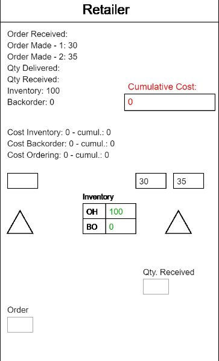
- The retailer plays one game round by repetitively clicking on the "Next Step" button. The following screens will be displayed.
The retailer should keep an eye on the "Game Log" section of the canvas for an explanation of what is happening and instructions whenever action (e.g. order entry) is needed.
Also an instructor administring the game should note that orders need to be physically transmitted from the retailer team to the warehouse team (e.g. using post-it paper slips), as well as shipments from the warehouse to the retailer.
The instructor has to halt the retailer's play after it issues an order to the warehouse, and reactivate the play at the retailer once an order is received from the warehouse.
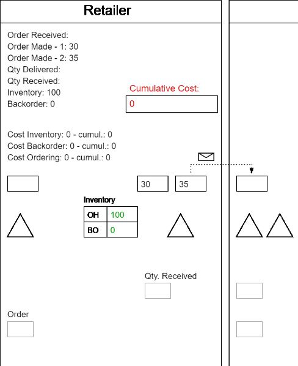
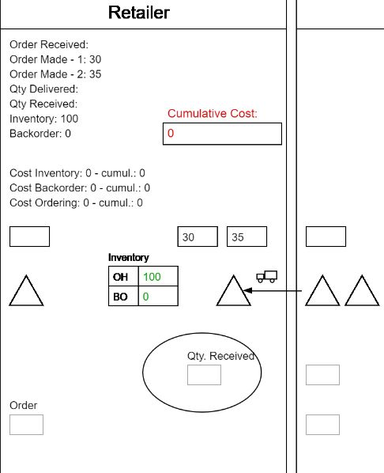
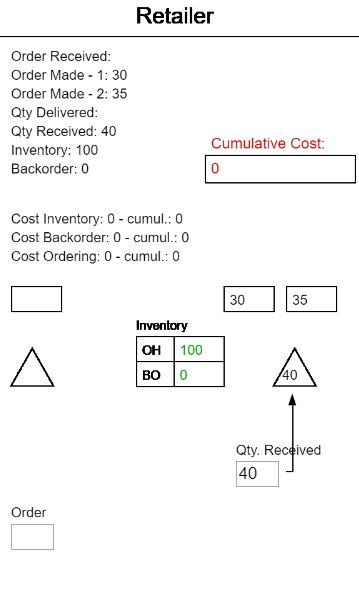
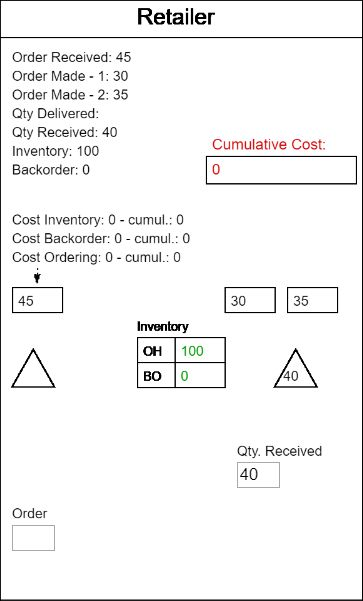
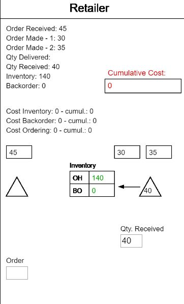
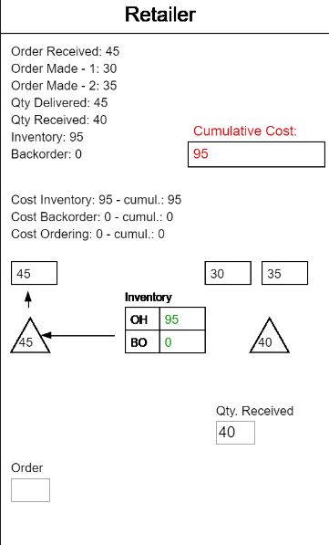
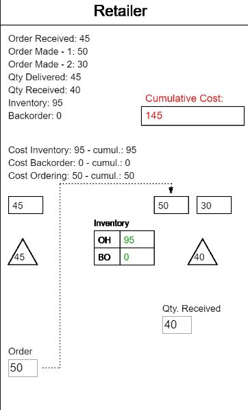
Playing as a warehouse/DC:
Warehouse and DC play being identical, the following will describe a typical round played by the warehouse.
- Admin asks the warehouse team to choose "Warehouse" as role and click on the "Initialize Game" button.
- The warehouse team's game board is intialized. The elements present are almost the same as with the retailer, with the exception of: (a) customer orders are replaced by retailer orders,
(b) two transit (transport) channels representing the 2-period transport lead time, and (c) an additional field to enter orders received from the warehouse.
- The warehouse plays one game round by repetitively clicking on the "Next Step" button. The following screens will be displayed.
Similarly to the retailer play, the warehouse will have to enter order information received from the retailer, issue an order to the DC on a post-it slip,
halt its play until a shipment is received from the DC, and resume the play to conclude the round (which will include sending a shipment to the retailer on a post-it slip).
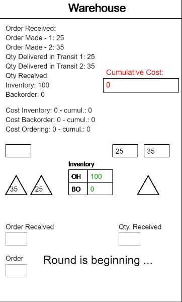

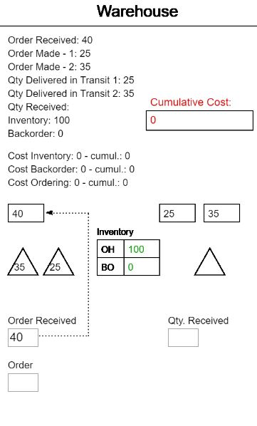
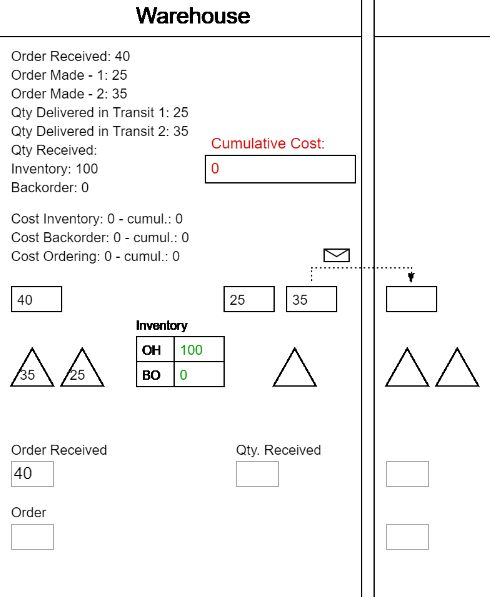
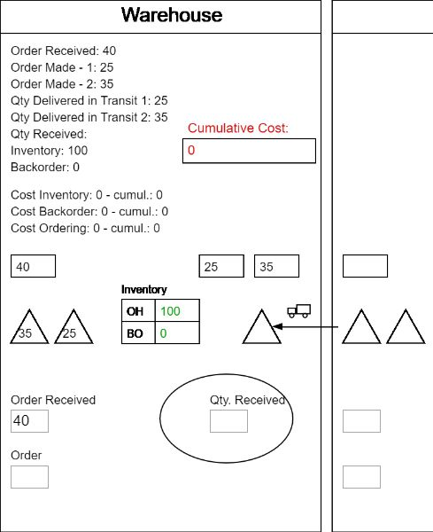
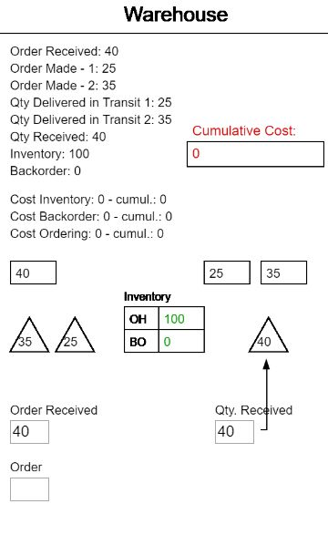
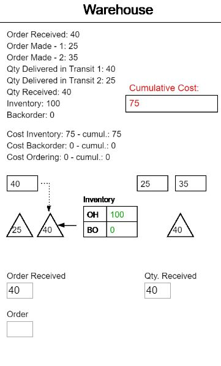
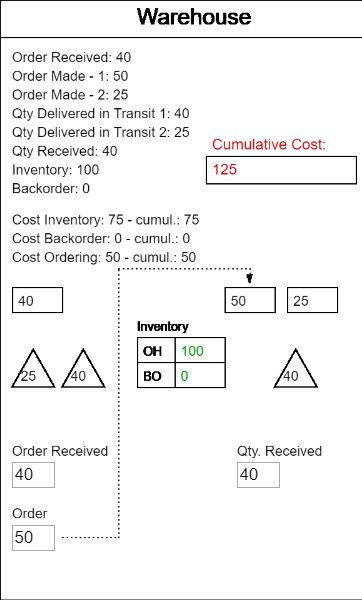
Playing as a factory:
- Admin asks the factory team to choose "Factory" as role and click on the "Initialize Game" button.
- The factory team's game board is intialized. Again, the elements present are almost the same as with the warehouse/DC, with the exception of: (a) DC orders instead of retailer/warehouse ones,
and (b) a production order pipeline with a lead time of two periods instead of normal orders as was the case with the other layers.
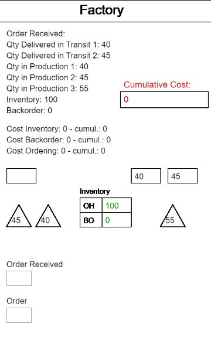
- The factory plays one game round by repetitively clicking on the "Next Step" button. The following screens will be displayed.
The factory will have to enter order information received from the DC, send a shipment (on post-it slip) to the DC, feed its inventory from the production system,
fullfill (if possible) the current DC order, update its on-hand inventory and backorder, and place a new production order in the production pipeline.
Note that contrary to the other layers, the factory does not need to halt within a round.
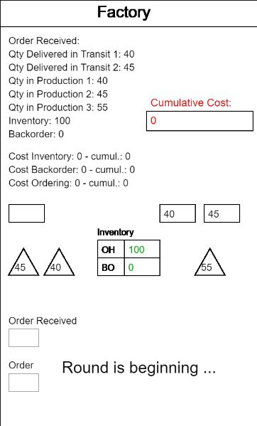
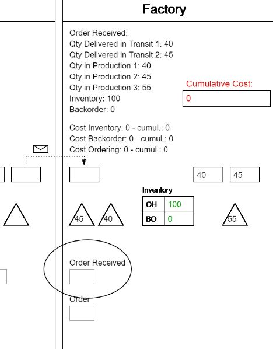
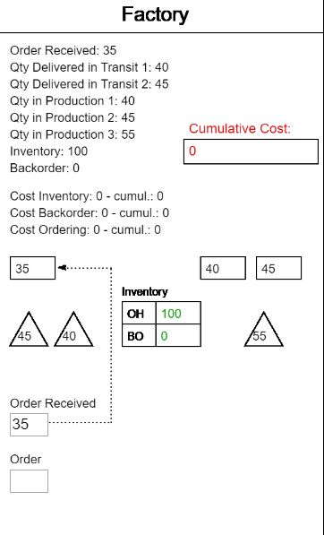
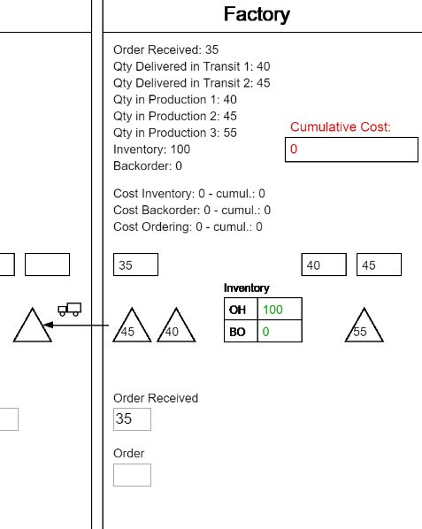
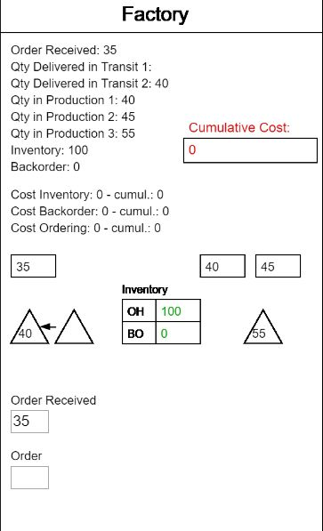
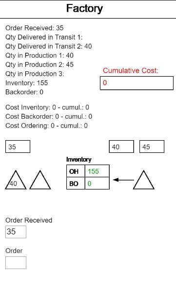
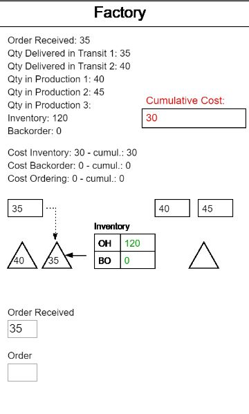
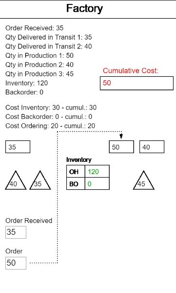
© 2019 Jawad Abrache. All rights reserved.